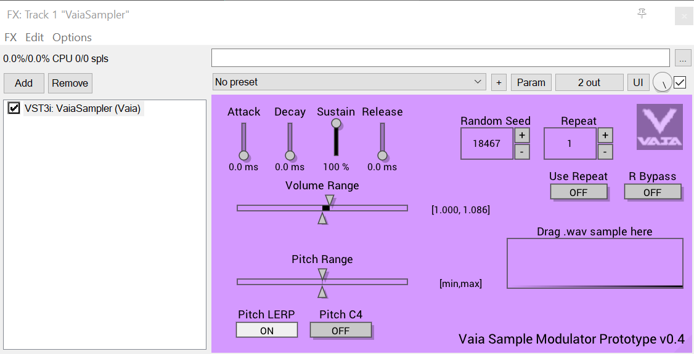
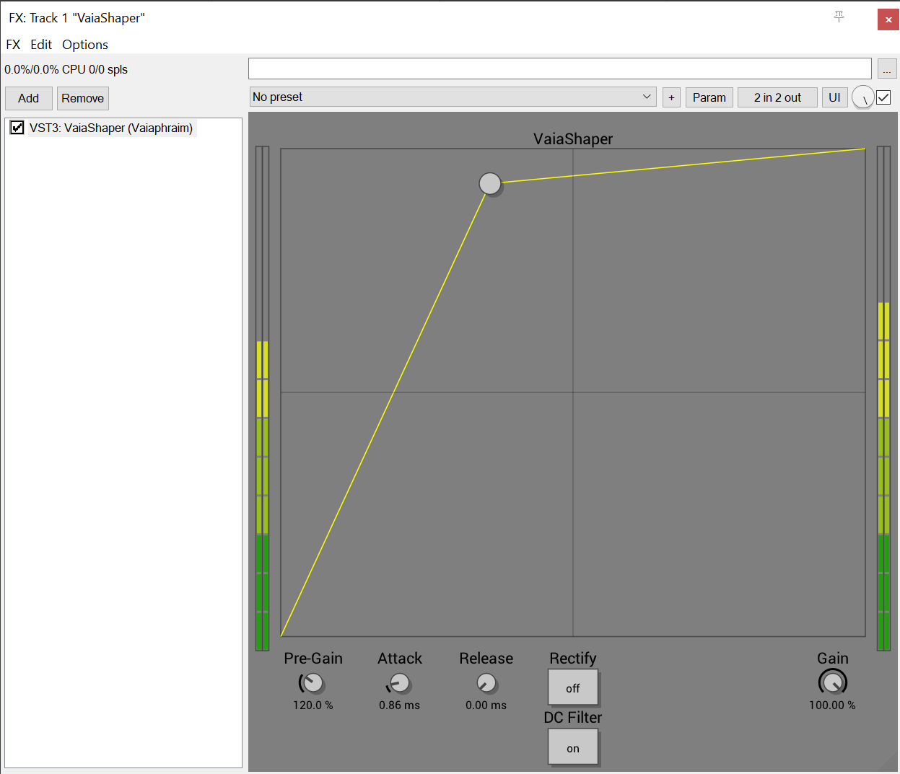
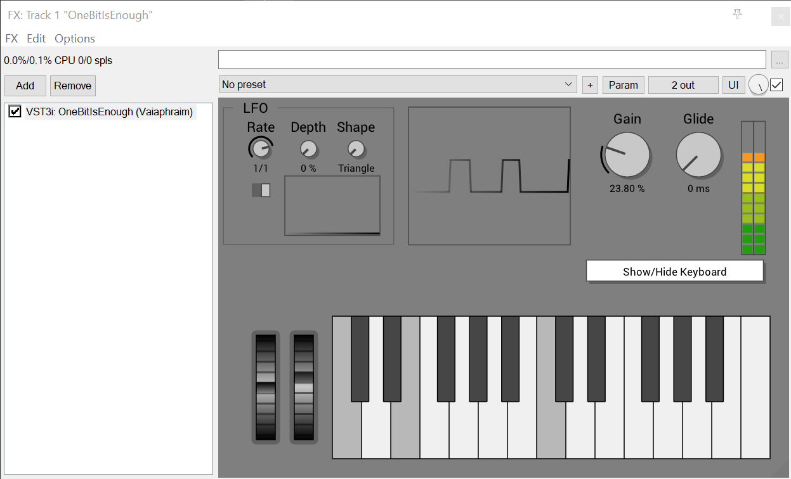
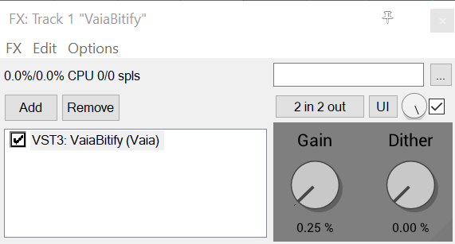
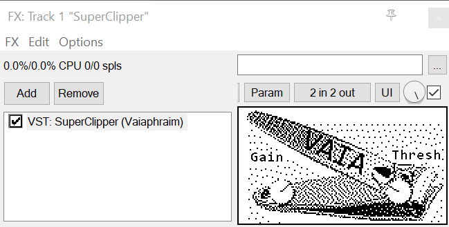

>> Audio Plugins
Introducing my collection of powerful tools designed to enhance your creative projects! I have developed helpful software to streamline my own workflow and I also want to help you achieve stunning results. Here are just a few of the tools we offer:

VaiaSampler
Load a sample and play it back with variations in volume and pitch with my music plugin VaiaSampler. This versatile tool, written in C++ with IPlug2, features linear interpolation and adapts tuning based on the played keyboard notes, making it the perfect tool for any musician or producer wanting to spice up their samples easily.

VaiaShaper
VaiaShaper is a powerful VST plugin that acts as a waveshaper, allowing users to modify and shape sound to their liking. Originally designed to generate control voltage, this plugin also offers options for rectification, making it a versatile tool for any producer or musician looking to add some creativity to their sound. With VaiaShaper, you can easily modify your audio to generate new and exciting sounds, whether you're looking to generate control voltage or simply shape your sound to your liking.

OneBitIsEnough
Take your music production to the next level with OneBitIsEnough, a VST plugin that allows for polyphony with raw square waves and three types of noise. With automated PWM and more PWM options through mod wheel and note velocity, OneBitIsEnough gives you unparalleled control over your 1-bit sound.

VaiaBitify
VaiaBitify is a powerful VST plugin that can convert any audio input into its 1-bit equivalent. It offers a gain and a dither knob to help fine-tune the output sound. Dithering introduces noise, but it can also recover sound information that would be otherwise inaudible after the 1-bit conversion. This efficient tool is written in C++ with IPlug2 and is perfect for any musician or producer looking to experiment with crushed sounds.

SuperClipper
Boost your audio's loudness with my music plugin SuperClipper. This plugin, written in C++ with the IPlug framework, can be loaded into a VST host (DAW) to clip your audio and give it that extra punch and distortion.
>> Image Processing
PranzDentalImageSoftware
My user-friendly image processing software is perfect for dentists and other medical professionals who need to compare before-and-after imagery in a standardized way. With its drag-and-drop interface and intuitive controls, PranzDentalImage makes it easy to crop and rotate photos and export the results quickly.
>> Download and Try my Free Plugins
Explore my selection of free Windows x64 plugins (VaiaShaper, VaiaBitify, SuperClipper) and give them a try in your music projects. I'd love to hear which sounds you made and how they enhanced your music!
[>> Download Link]